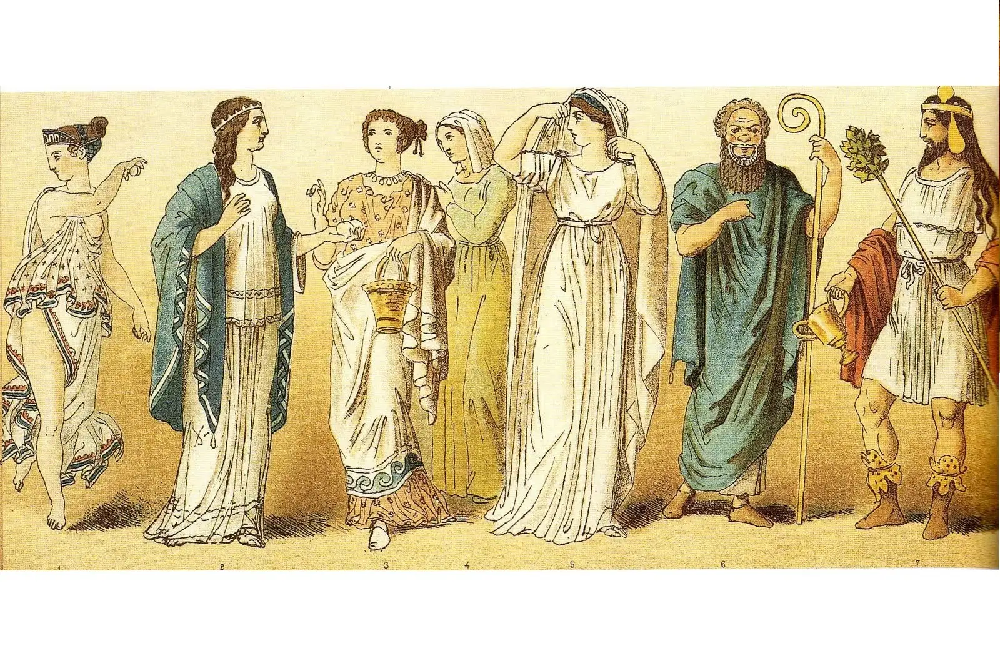
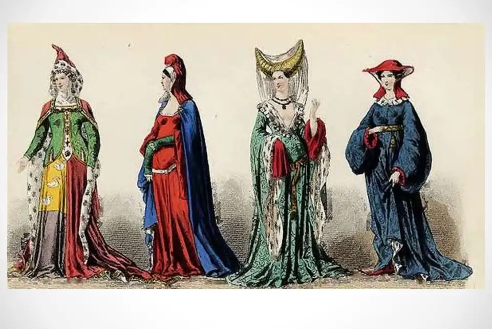
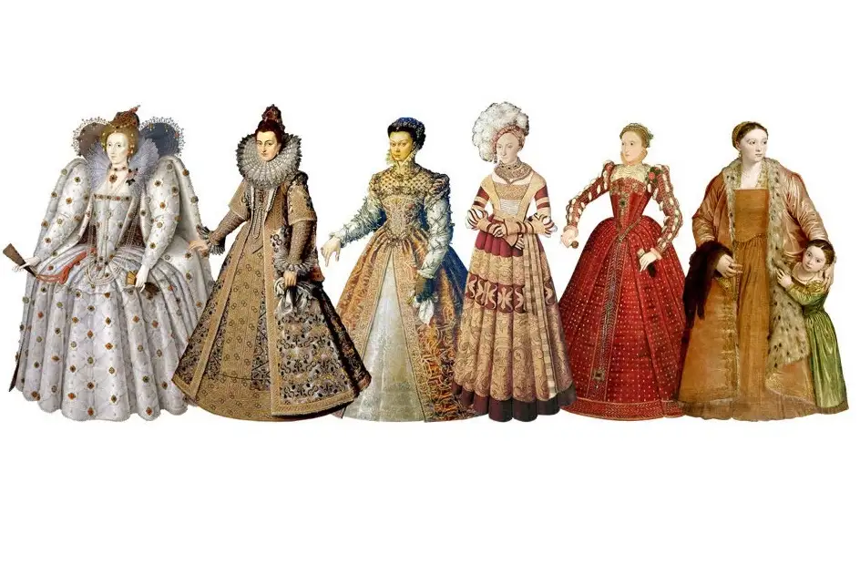
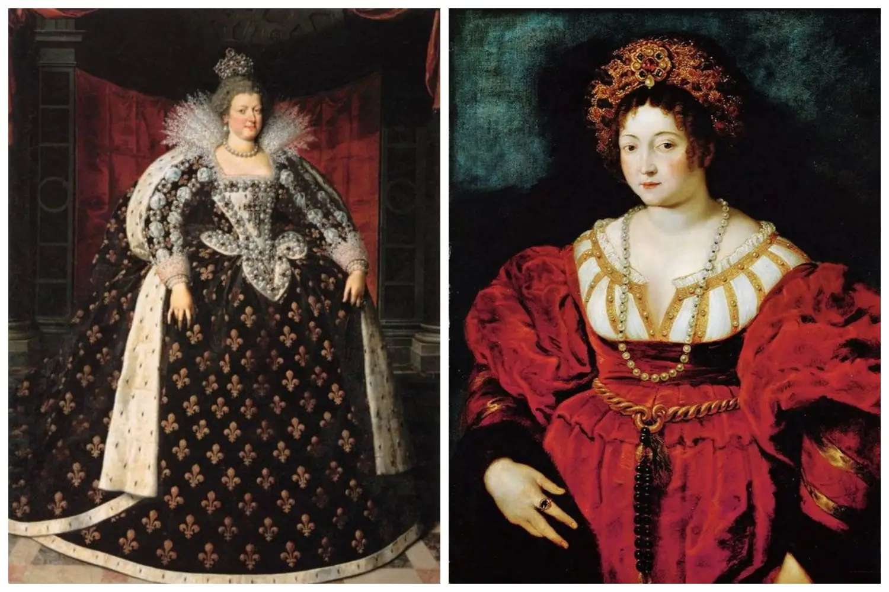
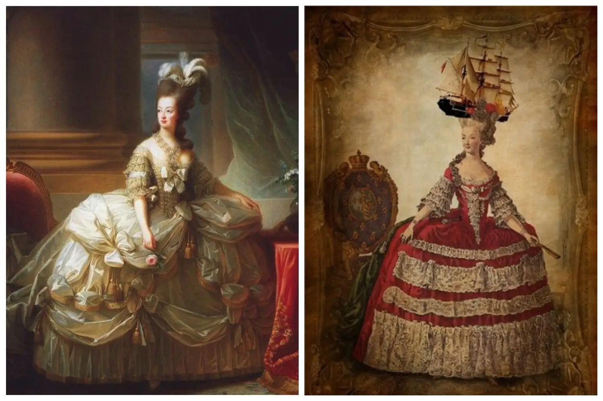
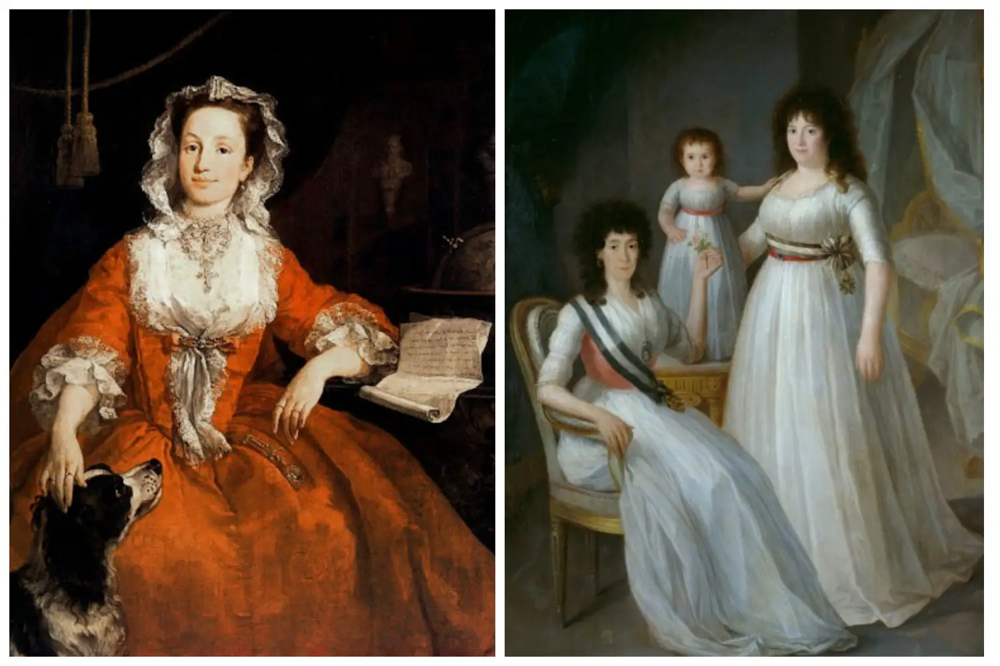
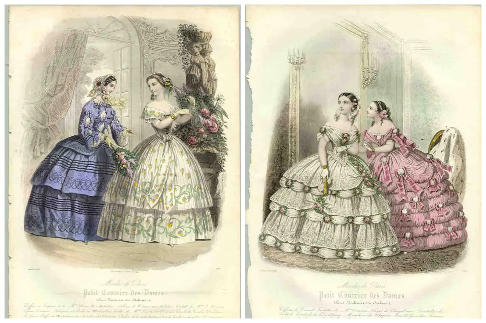
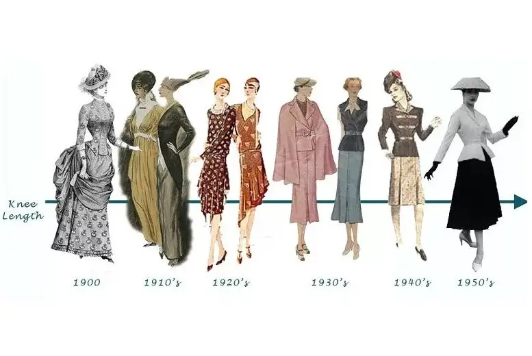

У сукні дуже бурхлива історія. Не раз вона відображала переважаючі в суспільстві настрої та могла змінити долі жінок у всьому світі. Про її важливість свідчить той факт, що за старих часів слово «плаття» використовувалося для позначення всієї спадщини людини.
Чи знали ви, що популярність маленького чорного плаття збіглася з трауром після Другої світової війни, в міні-спідниці можна було навіть потрапити до в'язниці, а мода на обтягуючі корсети викликала деформацію внутрішніх органів у жінок? Сьогодні ми коротко згадаємо, як сукні змінювалися впродовж всієї історії.
Античність – початок історії сукні
Колись наші предки носили шкури, які скріплювали в тих місцях тіла, де найбільше хотіли зігрітися. У такий спосіб вони отримували щось на зразок перших суконь, які надягали як жінки, так і чоловіки. Вони були мінімалістичними, але просторими та зручними.
З появою тканих матеріалів, основними стали шерсть, єгипетський льон, бавовна з Індії та китайський шовк. У багатьох країнах «модним» було драпірування, напевно, тому найкрасивіші жінки були стрункими, але з округлим животом через напуск тканини. Серед кольорів переважали білий з акцентами синього, лавандового та приглушеного жовтого.
Характерним, наприклад, грецьким одягом був пеплос, то був великий прямокутний відріз тканини, що застібався на талії та зав'язувався на плечах. Чоловіки носили хітон, боки якого зшивали між собою на плечах. Цікаво, що греки уникали довгих рукавів, оскільки вони призначалися в основному для рабів.
Середньовіччя – простий і практичний одяг
Середньовічні ідеали краси представляли жінку тихою, скромною істотою, змученого вигляду, з виснаженою фігурою та блідими щоками. Плаття повинні були додавати фігурі стрункості, трагізму та закривати все тіло. Його демонстрація була синонімом гріха.
Середньовічні плаття першими складалися вже з двох шарів – нижнього та верхнього. Зазвичай кожне з них мало різний колір, який поєднувався один з одним, створюючи неповторний контраст. Спіднє було домашнім, його надягали через голову та потім зашнуровували. Варто додати, що різницю між придворними дамами та містянами можна було помітити тільки за матеріалом суконь, адже їх стилі та фасони були практично ідентичні.
У середньовічній моді – на відміну від живопису або архітектури – темні та похмурі відтінки не були дуже популярними. Хоча, цікаво, що в той час в Південній Європі на першому місці стояв все ж чорний колір. У свою чергу, готичні сукні характеризувалися струмливими тканинами, завданням яких було обвивати струнку фігуру, а ширина рукавів відображала соціальний статус.
Відродження, або Як підкреслити природну красу
В епоху Ренесансу особлива увага приділялася зовнішній красі. Жінки хотіли подобатися та займалися своєю зовнішністю. Усе частіше замість хитромудрих зачісок з'являлося розпущене волосся та носилися сукні з V-подібнимвирізом. Не раз, – хоча й у залежності від статусу, – вони підкреслювалися такими тканинами, як парча або оксамит, мереживами, вишивкою і навіть дорогоцінними каменями. Однак, наприклад, в тоді ще могутній католицькій Іспанії тіло знову стали закривати, з чого ми знаємо характерні для цього періоду сукні з мереживними оборками, що повністю обвивають і закривають шию.
Бароко – сукні, що підкреслюють форми
У наповненому артистизмом бароко, на передньому плані виступають повні, істинно рубенсівські форми. Крім відомого в той час корсета, ліф зміцнювався спеціальними дерев'яними планками. Нескладно здогадатися, що така конструкція не тільки не дозволяла безперешкодно згинатися, але також не давала сідати та вільно дихати.
Відомий своїми неординарними ідеями – французький король Людовик XIV наклав на своїх підданих особливий канон, який визначав, як одягатися. Звідси й фігура перевернутого келиха, модна на той час у Європі, яку можна було отримати, серед іншого, завдяки корсету.
Рококо – сукні «клітки», осина талія та сміливі декольте
Штучна придворна мода XVIII-го століття ввела конструкцію суконь, що нагадувала... клітки. Крім обтягуючих корсетів, створювалися спеціальні каркаси з китових кісток і металевих прутів, які мали окружність до 8 метрів.
Жінка епохи рококо пікантна, примхлива, тендітна та витончена. Вона виглядала як лялька: на обличчі білила та рум'яна, волосся обсипане пудрою, чорні мушки відтіняли білизну шкіри. Талія затягувалася до немислимих розмірів і виразно контрастувала з неосяжною пишністю спідниць.
Сукні, безумовно, підкреслювали талію оси, але утруднювали виконання найпростіших дій, таких як сидіння в кріслі, туалеті або спуск по сходах. Перевагою цих суконь з металевою кліткою була їх легкість (в порівнянні з багатошаровим одягом). Але у таких величезних конструкціях, їх власницям було важко розрахувати власні габарити, що нерідко призводило до смішних і безглуздих ситуацій. Часто такі сукні були загрозою здоров'ю та навіть життю своїх власниць. Все завдяки деформації фігури та дегенерації кісток, щільно затягнутих корсетами, – це з дитинства сприяло деформації легенів та інших органів.
Просвітництво – пасторальні сюжети та класицизм
Новаторськими в епоху Просвітництва були пастельні тони та квіткові візерунки різних розмірів. Суспільство переситилося манірністю та штучністю епох бароко й рококо. На цьому тлі популярність отримали ідеї Просвітництва про близькість до природи. Сільське життя стала модним і це, природно, вплинуло на сукні. Тонка талія, широкий низ і сміливі декольте залишалися в моді. Однак на зміну манірності прийшли витонченість і простота у фасонах. Плаття стали шити з більш м'яких матеріалів, корсети з'являлися рідше, а костюми, навіть аристократичні, ставали простіше. Як у мистецтві, так й у моді відбулося повернення до античності, що, зокрема, проявилося в ніжних, повітряних сукнях, часто зі стрічкою під бюстом, замість поясів і корсетів.
ХІХ століття – романтизм, буфи та шлейфи
Після, здавалося б, переходу до більш зручного жіночого одягу, в кінці ХVIII століття маятник хитнувся назад і знову повернулася мода на рукава з пишними буфами, широкі, важкі сукні з криноліном і рюшами. На талії з'явилася широка стрічка, повернувся розклешений низ і, як і в середні віки, прикриті декольте. Ідеалом жіночої фігури знову став пісочний годинник, домогтися його намагалися завдяки довгим вечірнім сукням зі шлейфом, що тягнеться.
Для моди другої половини ХІХ сторіччя характерні сукні з вовняних і шовкових тканин, репсу, штофа, атласу й оксамиту. Забарвлення найяскравіші – колір фуксії, ліловий, червоний. Декором слугувала багата вишивка, бахрома, штучні квіти та мереживо (особливо золоте), виготовлене вручну. Здавалося, що винахід швейної машинки підштовхнув модниць до непомірного використання декоративних деталей в одязі, а поява анілінових барвників – до фарбування тканин у дуже яскраві кольори. У 1870-х роках в продажу вперше з'явилися готові жіночі блузи різноманітних стилів, у моду увійшли гладкі жакети в чоловічому стилі, а поєднання кольору і тканини стали менш строкатими і випадковими.
Рубіж століть – мінімалізм у моді
Перехід у ХХ століття – це в основному боротьба між традиціями та вже зрозумілою нам сучасністю, яка також знайшла своє відображення у моді. Однак слід визнати, що це був час, коли можна було побачити великі відмінності в одязі, в залежності від країни.
Ця епоха стала своєрідним рубіконом у моді: в Європі стали з'являтися сукні трохи нижче коліна, що демонструють жіночі литки. Фасони того часу стали різноманітними та перестали неодмінно підкреслювати талію. ХХ століття принесло ще одну значну революцію – культ тіла, особливо стрункого та спортивного тіла, яке можна цінувати не тільки в повсякденному житті, але й у конкурсах краси. Не можна забувати й про емансипацію, яка, після війни, зіграла одну з ключових ролей в переході від бальних суконь до знайомих нам силуетів. Але ХХ століття настільки насичене подіями, модними, у тому числі, що ця тема заслуговує окремої статті.